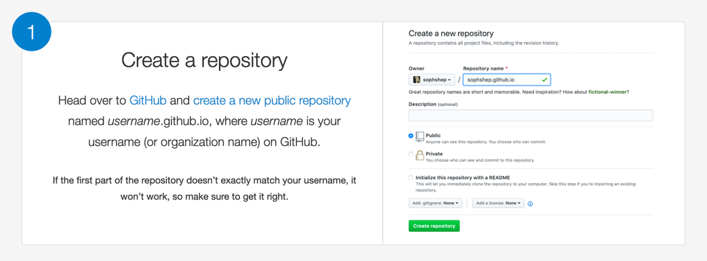
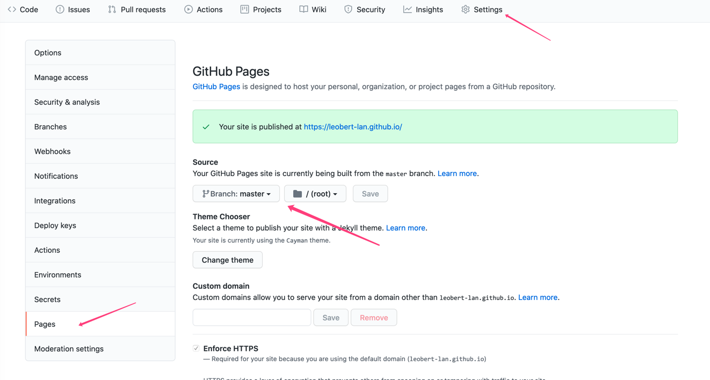

再不行动起来，你的托管的library就没了
前言
相信不少朋友都有自己进行维护的作品，并托管在三方Library仓库开放使用。
而距离Jcenter宣布停止对非付费用户的各项运营政策已经有一段时间了，再不行动起来，托管在Jcenter和Jfrog的 library就要没了。
本文带你走一遍 sonatype账号注册 、申请groupId 和 MavenCentral发布 ，并提供一个更加方便的 Gradle插件 用于发布。
背景
今年Jfrog宣布了 这项决定 ：
UPDATE: To better support the community in this migration, JFrog has extended the JCenter new package versions submission deadline through March 31st 2021.
To clarify, the JCenter repository will keep serving packages for 12 months until February 1st 2022. Only the JCenter REST API and UI will be sunsetted on May 1st 2021.
这就很尴尬了，随着时间的推移，未付费用户托管的library将无法再被获取。
扯点题外话，Google也被这一波操作秀到了，按照Google的尿性，可能会在未来支撑这件事业，但毕竟八字没一撇。
所以，我们剩下的选择不多了：
- 成为
尊贵的付费用户 - 转投
sonatype的怀抱，使用免费的MavenCentral
注册 sonatype 账户
sonatype的玩法很溜，使用了敏捷开发管理的知名工具 JIRA 进行事物管理，所以第一件事情是 注册sonatype的JIRA账户
按照信息指导填写即可。
申请GroupId
一个托管在三方仓库的Library由三个信息确定：GroupId，ArtifactId，version
不难理解，我们需要先申请一个可用的GroupId。开始申请之前，请先阅读以下内容，避免无用操作：
按照sonatype的运营策略，他们利用了一些巧妙的方式来管理GroupId并且规避抢注风险
首先分为两种类型：
- 你拥有域名
- 你没有域名
第一类的验证方法我没有测试过，拥有域名的可以按照官网介绍试一下：
- Add a TXT record to your DNS referencing this JIRA ticket: (JIRA-TASK-ID) (Fastest)
- Setup a redirect to your Github page (if it does not already exist) You can find more information here: https://central.sonatype.org/publish/
第二类需要利用到第三方（如：Github、Gitlab、Gitee 等） 通过第三方 "对于其用户名的唯一性约束" 和 "Pages服务"，可以得到一个托管在三方平台的网站，以github为例： 开通Pages后，简单配置可以得到网站：https://leobert-lan.github.io/
创建Pages网站
以github为例，Gitee等应该类似
创建一个 {github_user_name}.github.io 的仓库

如果已经有个人博客，也可以利用HEXO或者Git-Book等工具，生成相关博客网页进行托管
下载仓库并添加一个 不太离谱 的 index.html
注意：
- sonatype 仅关注这个域名是否存在，按照映射规则，GroupId为 io.github.{github_user_name}，如果这个域名不存在，不会颁发对应的GroupId给你
- sonatype 并不关注网页的内容是啥（哪怕和项目无关），但不要弄得太离谱：政治、宗教、不良信息等不要乱来即可
随后进入项目的设置 
选定分支和路径后保存，可以很快得到部署结果，部署成功后可以自行验证下。
JIRA创建申请task
- 点击新建Task后，类型等均为默认，简单描述你的意图；
- 按照映射规则，填写GroupId：io.github.{github_user_name} gitlab、gitee同理
- 填写你的Github项目的仓库信息等
提交后等待，一般会先有 机器人 进行答复，告知你平台的运营政策、相关注意事项。
注意：不要一直盯着等待，注册时填写了邮箱，一旦流程状态发生了变更，会有邮件通知
收到邮件后，通过备注进行回复可以改变流程状态，随后等待人工审核（如果信息均无误，可能机器直接过审）
随后进入账户归属权认证
验证账号归属权
当然，这里是Github或者Gitee等账号的归属权。
前面我们利用这些平台得到了唯一的域名，但是sonatype需要判断 这个域名是你的，因为：
- 账号和Pages一一对应
- Pages和GroupId一一对应
- Task中对GroupId进行了唯一性校验
所以sonatype要求在对应的Github账号下创建一个和TaskID一致的仓库 例如：
Please create a public repo called https://github.com/leobert-lan/OSSRH-67741 to verify github account ownership.
If you do not own this github account, please read: https://central.sonatype.org/publish/requirements/coordinates/
创建成功后，再回来评论一次推进流程，等审核通过后，就获得了GroupId
到此为止我们就获取了GroupId。接下来我们需要 准备签名工具
Library的信息全部存在pom文件中，如果没有签名机制，就有可能出现李代桃僵的事情。
这里我们需要用到 GPG ，gpg官网 ，有兴趣的可以多研究研究。
注意:macOs >= 10.15时，暂无法安装gpg，你可能需要寻找一台window电脑来生成签名密钥，不用担心，密钥是可以导出的
生成GPG签名密钥
生成
gpg --full-generate-key
使用命令进入密钥生成，
- 选择 RSA(仅用于签名)即可
- 设置密钥长度，使用密钥默认长度 2048
- 设置过期时间，永久有效即可，没必要自己折腾自己
- 确认信息后输入 "真实姓名"，"邮箱"，"密钥Comment"，Comment不参与任何校验、用于备注他的作用
- 确定信息或者再次修改，确认后需要输入两次密码，请不要忘记你的密码
- 生成完成后会输出信息
当然，没有必要死记这些信息，
利用：
gpg --list-keys
或者
gpg -K
可以查看所有生成的key，每个key都有一段很长的ID，这是其公钥的ID，长41位，当然，它的后八位也可以作为其ID，在使用上两者是等价的，一般用 后八位 即可。
上传公钥到公共服务器
我选择了"pool.sks-keyservers.net"，当然还有其他公共服务器可以托管。
gpg --keyserver hkp://pool.sks-keyservers.net --send-keys 公钥 ID
检查是否上传成功：
gpg --keyserver hkp://pool.sks-keyservers.net --recv-keys 公钥 ID
导出公钥、密钥、钥匙串（KeyRing）
#导出公钥到 public-file.key 文件：
gpg -a -o public-file.key --export KeyId
#导出私钥到 private-file.key 文件：
gpg -a -o private-file.key --export-secret-keys KeyId
#导出钥匙串到 secring.gpg 文件：
gpg --keyring secring.gpg --export-secret-keys
保管好你的钥匙！！
配置项目
此时，我们的准备工作已经到位，开始修改你的项目：
更改plugin
考虑到 Gradle 7.0 会弃用 maven插件 ，我们选用 maven-publish 插件
plugins {
// 其他必要的插件
id 'signing'
id 'maven-publish'
}
添加 maven-publish 用于发布
添加 signing 用于签名
添加签名的必要信息
signing.keyId=公钥ID，后八位即可
signing.password= GPG密钥的密码
signing.secretKeyRingFile=/Users/leobert/.gnupg/secring.gpg #钥匙串地址
比较遗憾的是我没有找到在local.properties中配置的方法，似乎signing插件内部直接读取了属性。
考虑到密钥安全性，可以将gradle.properties 文件从Git中移除并忽略。
配置生成JavaDoc和Sources的Task
task sourcesJar(type: Jar) {
classifier = 'sources'
from sourceSets.main.java.srcDirs
}
//android 项目需要额外定义一下task，java-library等项目插件自带task
//task javadoc(type: Javadoc) {
// source = android.sourceSets.main.java.srcDirs
// classpath += project.files(android.getBootClasspath().join(File.pathSeparator))
//}
task javadocJar(type: Jar, dependsOn: javadoc) {
classifier = 'javadoc'
from javadoc.destinationDir
}
tasks.withType(Javadoc) {
options.addStringOption('Xdoclint:none', '-quiet')
options.addStringOption('encoding', 'UTF-8')
options.addStringOption('charSet', 'UTF-8')
}
注意：android 项目需要额外定义一下javadoc 的 task，java-library等项目插件自带task，并注意路径
配置发布信息
注意，在任务Evaluated之后进行配置，即配置在 afterEvaluate 闭包内
afterEvaluate {
publishing {
publications {
mavenAndroid(MavenPublication) {
groupId GROUP_ID
artifactId ARTIFACT_ID
version VERSION_NAME
artifact sourcesJar
artifact javadocJar
artifact('build/libs/xxx.jar') //
// 配置 pom 文件格式
pom {
packaging = 'jar'
name = ARTIFACT_ID
description = ARTIFACT_ID
url = siteUrl
licenses {
license {
name = 'The Apache Software License, Version 2.0'
url = 'http://www.apache.org/licenses/LICENSE-2.0.txt'
}
}
developers {
developer {
id = 'leobert'
name = 'leobert'
email = 'leobert.l@hotmail.com'
}
}
scm {
connection = siteUrl
developerConnection = gitUrl
url = siteUrl
}
}
}
}
// 配置远程仓库
repositories {
maven {
url = 'https://s01.oss.sonatype.org/service/local/staging/deploy/maven2/'
credentials {
username ACCOUNT
password PASSWORD
}
}
}
}
signing {
sign publishing.publications.mavenAndroid
}
}
这是一个简单的样板，当然，协议部分、开发者部分、贡献者部分等还可以继续扩展。
ACCOUNT 和 PASSWORD 为sonatype的账密，
build之后，执行publish task 即可进行签名和上传
最后一步
使用sonatype的账密 登录 sonatype 的maven仓库
左侧导航进入：stagingRepositories，找到提交的内容，再次检查下所有的校验已通过，close，刷新后进行release。
确认成功后，关闭sonatype-jira的task。
上述操作成功后，提交的Components应当已经进入sonatype的release仓库，大约1小时内同步到MavenCentral
之后更新版本，理论上会自动同步。
编写Gradle插件让配置更加简单
其实maven-publish插件还支持更加复杂的配置，但个人项目中可能很少用到，挑选了"够用"的配置项后，我们编写一个Gradle插件， 这样可以省略重复样板。
- gradle.properties 中 写入签名必要的信息
考虑到本篇的主题是分享MavenCentral发布的经验，略去Gradle插件的相关知识，以及本插件的源码介绍。有兴趣的朋友可以通过仓库的源码自行了解。
PS：很多时候我们都是copy了野生配置，而且往往是Groovy代码，出于Groovy语言的特殊性，这些闭包配置项出现错误时，大概率会被兼容，插件使用Kotlin编写， 阅读其源码可以加深对于maven-publish等插件API的认知
signing.keyId=公钥ID，后八位即可
signing.password= GPG密钥的密码
signing.secretKeyRingFile=/Users/leobert/.gnupg/secring.gpg #钥匙串地址
- local.properties 中写入sonatype 账密信息：
nexus_user=sonatype账号
nexus_pwd= sonatype密码
- 引入插件后，build.gradle进行必要的配置：
plugins {
id 'osp.leobert.maven.publish'
}
EasyPublish {
sourceSet = android.sourceSets.main.java.srcDirs
docClassPathAppend = project.files(android.getBootClasspath().join(File.pathSeparator)).asPath
docExcludes = ["a/b/c/*"]
artifact {
value = "build/outputs/aar/android-lib-demo-release.aar"
}
developer {
id = 'leobert'
name = 'leobert'
email = 'leobert.l@hotmail.com'
}
//append developers
// developer {
// id = 'aa'
// name = 'bb'
// email = 'cc'
// }
groupId = "io.github.leobert-lan"
artifactId = "android-demo"
version = "1.0.0"
packaging = "aar"
siteUrl = "https://github.com/leobert-lan/EsayPublish"
gitUrl = "https://github.com/leobert-lan/EsayPublish.git"
licenseName = 'Apache 2.0'
licenseUrl = 'https://github.com/leobert-lan/EsayPublish/blob/master/LICENSE'
mavenRepoUrl = "https://s01.oss.sonatype.org/service/local/staging/deploy/maven2/"
}
即可进行发布。